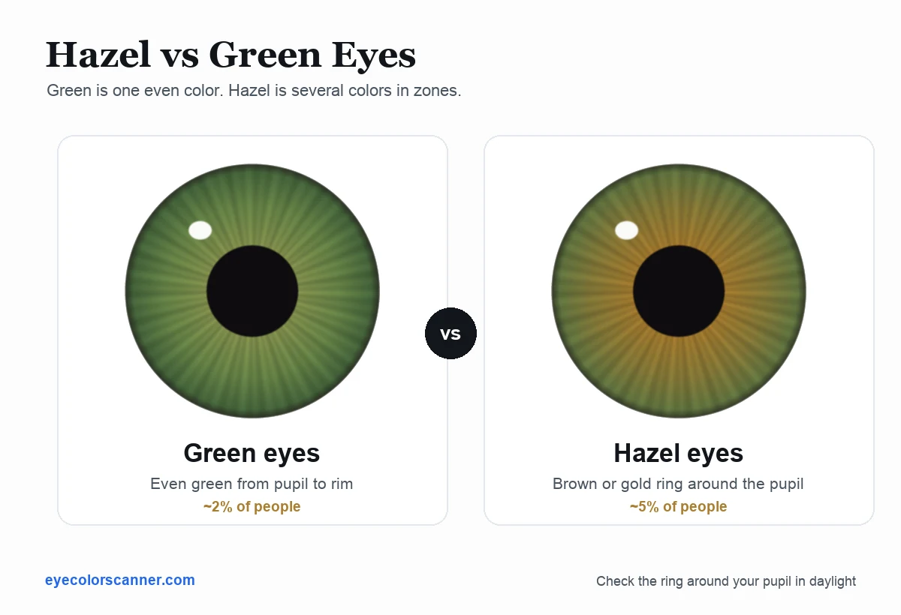

Hazel vs green eyes: how to tell the difference
Quick answer: green eyes show one fairly even green tone across the iris. Hazel eyes contain two or more colors in zones, usually brown or gold around the pupil shifting to green or blue toward the edge. Look at the ring directly around your pupil in daylight: if it is clearly brown or golden, your eyes are hazel, not green.
Hazel and green are the two most confused eye colors, and the confusion is understandable: both can photograph as "greenish", and both shift with lighting. But side by side, the difference is structural, not subtle. Green is a color; hazel is a pattern.
Hazel vs green eyes, side by side

Green eyes
One even green tone across the whole iris, sometimes with darker green flecks. The color barely changes from the pupil outward.
~2% of peopleHazel eyes
Two or more colors in zones: brown or gold around the pupil, shifting to green or blue toward the rim. The zones are the definition.
~5% of peopleThe one-look test: check the ring around your pupil
Stand at a window in daylight and look at the area of iris immediately around your pupil.
- Even green from pupil to rim, maybe with darker green flecks? Your eyes are green.
- A brown, amber, or golden zone around the pupil that gives way to green or blue further out? Your eyes are hazel.
That central zone is the tell. Hazel eyes concentrate their melanin near the pupil, which is why hazel always carries some warmth at the center even when the outer iris reads green.
Still not sure? Work through this
Four questions, in daylight, in front of a mirror. Stop at the first one that gives you a clear answer.
- Yes, clearly → hazel. You can stop here.
- No, it is green right up to the pupil → green. You can stop here.
- Maybe, it is subtle → go to question 2.
- The color swings noticeably between green, gold, and brown → hazel.
- It stays recognizably the same green → green.
- The rim is a different color from the center → hazel.
- Rim and center match → green.
- Yes, some say green and some say brown → almost certainly hazel. Green eyes rarely provoke disagreement.
Settle it in ten seconds instead
The free online scanner compares the ring around your pupil with your outer iris, which is exactly how hazel is identified, and names your shade. Nothing is uploaded.
Why the difference exists
All iris color comes from the amount and placement of melanin, plus golden lipochrome pigment and the blue of scattered light. In green eyes, a small, even amount of pigment blends with scattered light into one uniform color. In hazel eyes, the pigment is distributed unevenly, dense near the pupil and sparse at the edge, so different parts of the iris literally have different colors.
| Green eyes | Hazel eyes | |
|---|---|---|
| Look | One even color | Two or more colors in zones |
| Around the pupil | Green | Brown, amber, or gold |
| Typical shades | Emerald, sage, deep green | Hazel green, hazel brown, golden hazel |
| In changing light | Stays clearly green | Swings between green, gold, and brown |
| Estimated share of people | ~2% | ~5% |
Why hazel eyes seem to change color
Hazel is famous for looking green in the forest, gold in candlelight, and brown in the office. The pigment never changes; the emphasis does. Because a hazel iris holds several tones at once, the surrounding light decides which zone dominates what you see. Warm light amplifies the golden center; cool daylight lifts the green rim; dark surroundings enlarge the pupil and hide the outer green entirely. Green eyes shift too, but far less, because there is only one color to emphasize.
Hazel green, hazel brown, and everything between
Hazel is a spectrum rather than a single color. Eyes with a thin golden core and a wide green rim are often called hazel green; eyes where brown dominates with green only at the edge are hazel brown. Where your eyes sit on that spectrum is exactly the kind of question a scan answers better than a mirror. Our eye color chart maps all the in-between shades, and if you want to know how uncommon your result is, see rare eye colors ranked.
Settle it with a scan
The free Eye Color Identifier app analyzes a photo of your iris and tells you whether you're Hazel Green, Emerald Green, or something else entirely, with a confidence score, pigment breakdown, and rarity. Scan in different light and watch how your hazel shifts.
Frequently asked questions
What is the difference between hazel and green eyes?
Green eyes are one even color; hazel eyes are multicolored, with brown or gold near the pupil and green or blue toward the edge.
Is hazel a mix of green and brown?
Visually yes. Technically it's an uneven melanin distribution: dense near the pupil, sparse toward the rim.
Do hazel eyes change color?
Their appearance changes with light because different zones get emphasized; the pigment itself stays the same.
Which is rarer, hazel or green?
Green, at roughly 2% of people worldwide versus about 5% for hazel.
Sources
- American Academy of Ophthalmology, Your blue eyes aren't really blue
- MedlinePlus Genetics, Is eye color determined by genetics?